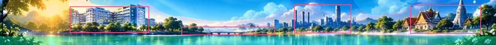
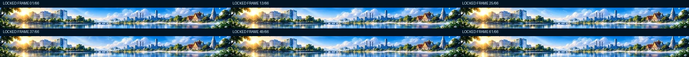

ตัวอย่างภาพเคลื่อนไหวที่ปรับจากภาพต้นฉบับ: อาคาร วัด สะพาน และขอบฟ้าอยู่นิ่ง ให้เคลื่อนไหวเฉพาะแสงแดด เมฆ และผิวน้ำ ไม่มี Overlay นก ใบไม้ หรืออนุภาคที่สร้างขึ้นใหม่
ถ้าตั้งค่า Reduced Motion ระบบจะหยุด Animation เป็นภาพนิ่งโดยอัตโนมัติ · วิดีโอใช้ภาพจากต้นฉบับที่บันทึกอยู่ใน Repository
อ้างอิงเพื่อเปรียบเทียบเท่านั้น ไม่ใช่สิ่งที่จะนำไปใช้ในเวอร์ชันใหม่
โครงสร้างสำคัญทั้งหมดใช้ภาพเดียว จึงไม่ย่อ/ขยายหรือย้ายตำแหน่งระหว่าง Frame

ฟ้า = ท้องฟ้า, เขียวน้ำทะเล = ผิวน้ำ, เหลือง = แสงอาทิตย์, กรอบชมพู = โครงสร้างที่ล็อกพิกเซล

ความแตกต่างระหว่างเฟรมมาจากเฟรมต้นฉบับทั้ง 12 เฟรมผ่าน Region Masks ไม่ใช่ภาพที่ AI สร้างอาคารใหม่ทุกเฟรม ข้อมูล PM2.5 จริงและตัวเลขยังไม่ถูกผูกกับ Demo นี้